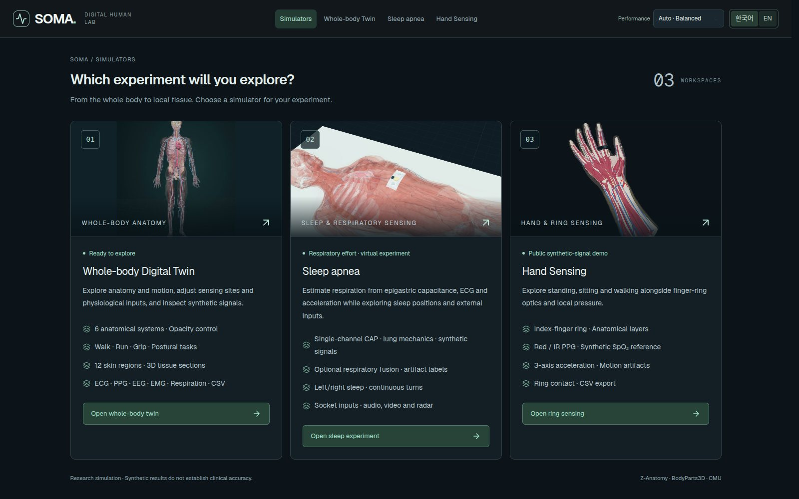
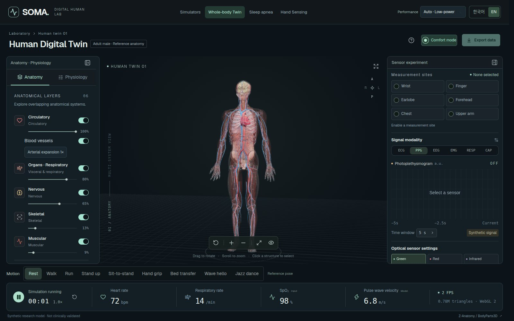
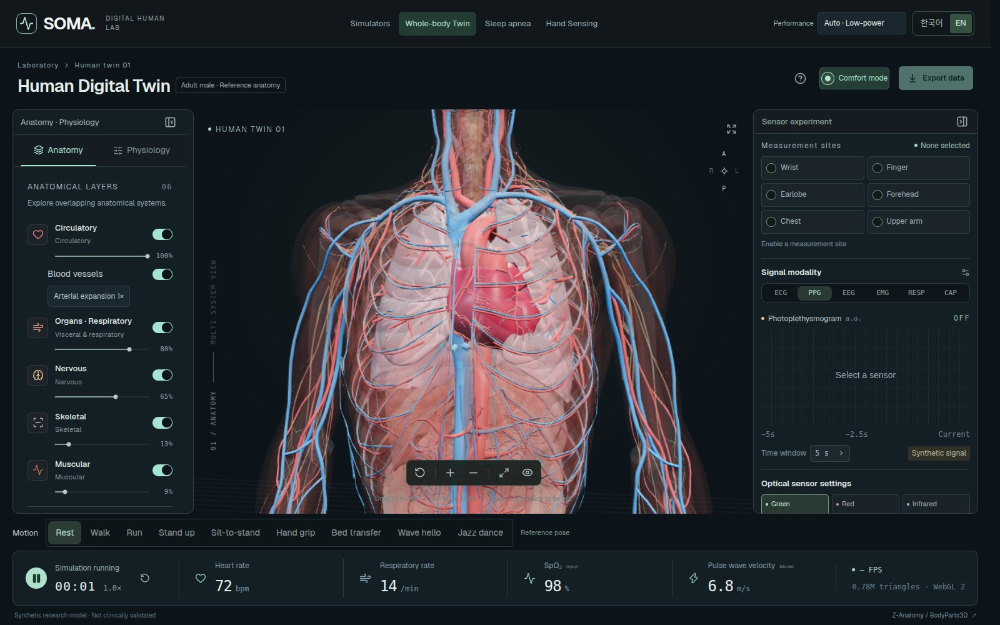
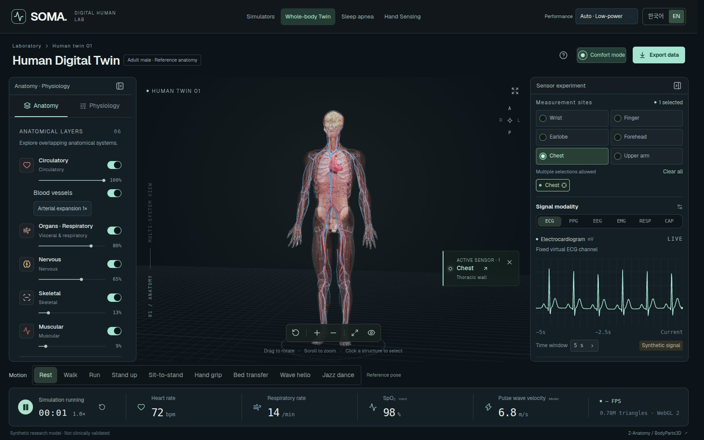
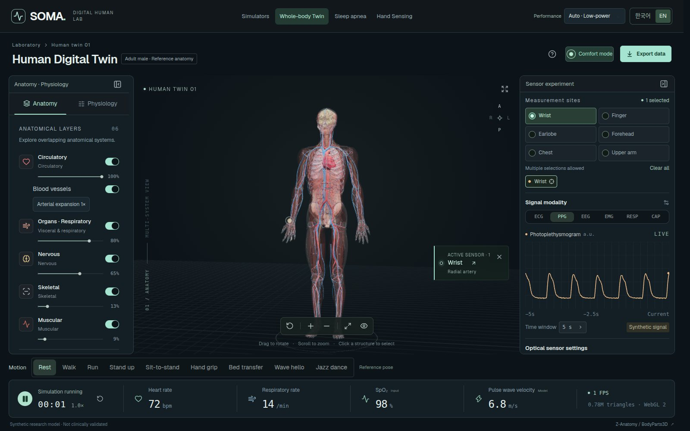
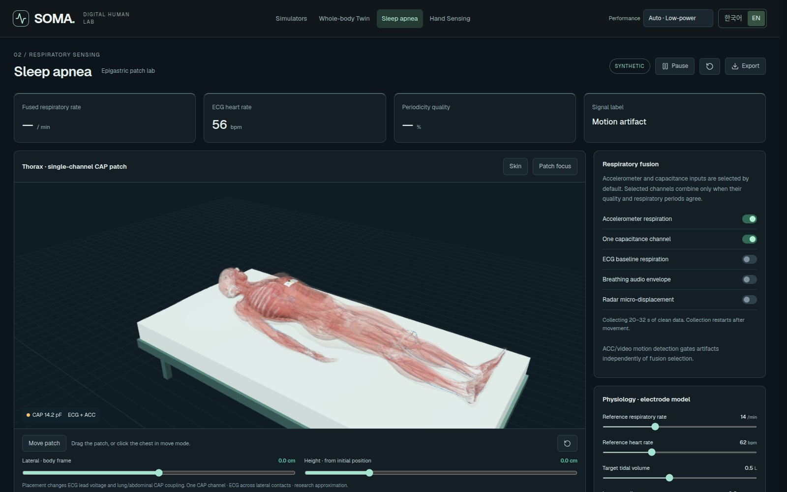
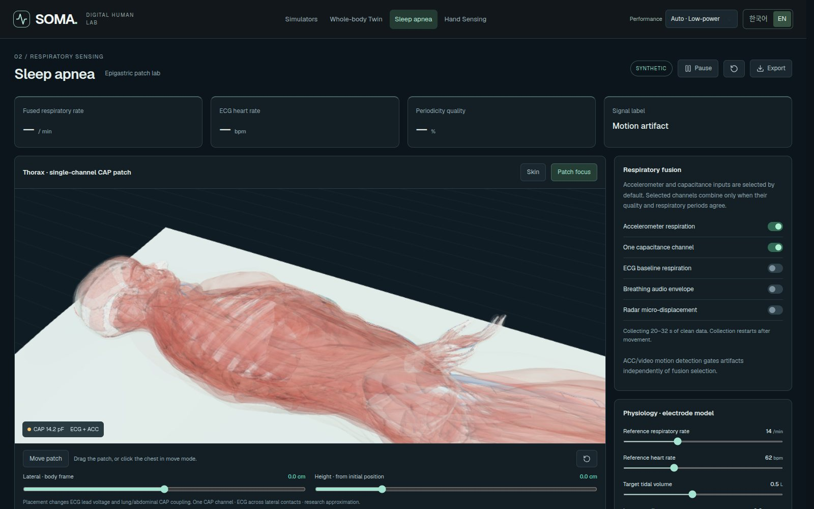
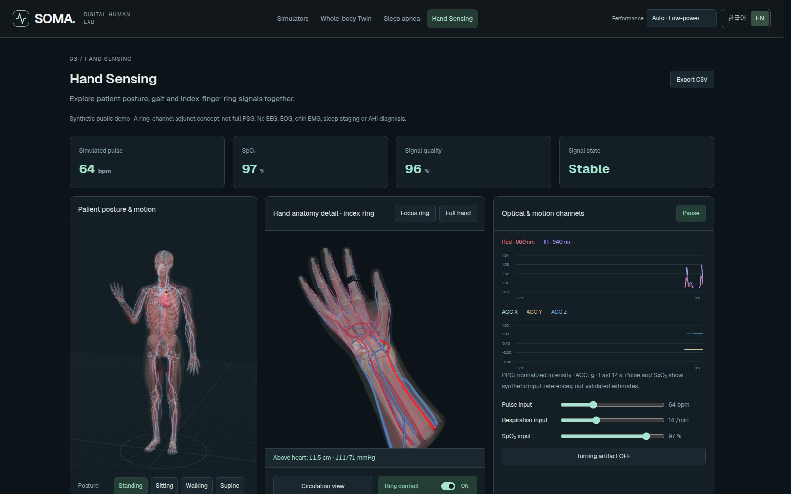
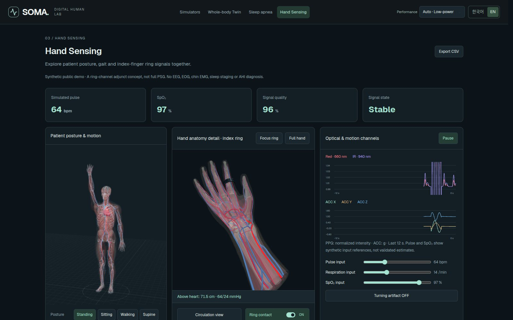

Solutions SOMA
SOMA
A biosensing digital twin for wearable-sensor development. Place virtual sensors on a full-body anatomical model, vary physiological conditions and review the synthetic signals, so design decisions are made before any hardware is built.
- Whole-body twin: six body systems, 3D tissue sections at 12 skin sites
- ECG · PPG · EEG · EMG · respiration · capacitance synthesis, with CSV export
- Sleep apnea: respiration from an epigastric patch, posture and turning conditions
- Ring blood-pressure monitor: PPG (red/infrared) signals and blood-pressure experiments by hand height

Labs
- Whole-body digital twin
- Sleep apnea · epigastric patch
- Hand sensing · ring BP monitor
Screen demo
Key screens
11 key screens from the live demo walk through the features. Use the previous and next buttons, the arrow keys or the strip below; open the live demo to try it yourself.
-
01 / 11
Simulator home
The starting screen for the three labs: whole-body digital twin, sleep apnea and hand sensing.
- What each simulator covers and which signals it produces
- Korean and English; performance modes (auto, low, balanced, high)
-

02 / 11
Whole-body digital twin
Explore synthetic signals on an anatomical-atlas body while changing its structures and physiology.
- Circulatory, visceral, nervous, skeletal and muscular systems, each with its own opacity
- Live heart rate, respiration rate, SpO₂ and pulse-wave velocity
- Rotate, zoom, front view and focus mode
-

03 / 11
Heart and lungs view
Switch between whole-body, heart-and-lungs and brain views to focus on a region.
- Adjustable arterial expansion
- Toggle muscles and pulsation
-

04 / 11
Chest sensor · ECG
Choose a site and the sensor is placed on the model, with the synthetic signal for that site.
- Six sites: wrist, finger, earlobe, forehead, chest, upper arm
- Six signals: ECG, PPG, EEG, EMG, RESP, CAP
- Adjustable time window
-

05 / 11
Wrist sensor · PPG
Compare PPG waveforms across optical wavelengths and contact conditions.
- Green 530 nm · Red 660 nm · Infrared 940 nm
- Adjustable sensor contact
-
06 / 11
Motion and physiology
Apply motions such as walking or running and see their effect on the signals.
- Nine motions, including rest, walk, run, sit-to-stand and hand grip
- Physiology controls and reset to initial conditions
- Export signal data as CSV
-

07 / 11
Sleep apnea · epigastric patch
Respiration is estimated from a single-channel capacitance (CAP) patch on the epigastrium, with ECG and acceleration.
- Synchronised signals: CAP · ECG · accelerometer XYZ · ECG-derived respiration (EDR)
- Breathing scenarios: normal, obstruction, loss of drive
- Fused respiratory rate, periodicity quality, motion-artifact labels
-

08 / 11
Posture and patch placement
Switch continuously between supine, left, right and turning in bed, and move the patch to see the signals change.
- ECG potential and CAP coupling change with patch position
- Physiology and electrode model: lung compliance, airway resistance, subcutaneous fat and more
- External gateway input when run locally: up to 32 channels, audio, video and radar features
-

09 / 11
Hand sensing · ring BP monitor
An optical ring on the index finger of a full-body patient, exploring PPG and local blood pressure by posture and hand height.
- Standing, sitting, walking and supine
- Red/IR PPG, 3-axis acceleration, SpO₂ reference value
- Ring contact toggle, turning artifact, CSV export
-

10 / 11
Ring close-up
Zoom in on the ring and the hand anatomy: skin, muscle, vessels and tendons.
- Circulation view
- Exaggerated arterial motion
-

11 / 11
Hand height and blood pressure
Move the hand above or below the heart and the local arterial pressure waveform follows a hydrostatic model.
- Heart-level SBP/DBP and hand-height inputs
- Optical-signal artifacts flagged by movement speed
Model
What the model covers
All signals are synthetic data for virtual experiments, not clinically validated measurements or diagnoses.
Specifications
Key specifications
| Anatomy | Anatomical-atlas full body; six body systems with opacity; 3D tissue sections at 12 skin sites |
|---|---|
| Sensor sites | Wrist · finger · earlobe · forehead · chest · upper arm |
| Signals | ECG · PPG (530/660/940 nm) · EEG · EMG · RESP · CAP, CSV export |
| Motions | Rest · walk · run · stand up · sit-to-stand · hand grip · bed transfer · wave · dance |
| Sleep apnea | Single-channel CAP epigastric patch + ECG + accelerometer XYZ + EDR; four postures; three breathing scenarios |
| External input | WebSocket gateway, up to 32 channels on a common clock (local run) |
| Hand sensing | Index-finger ring Red/IR PPG, 3-axis acceleration, four postures, hydrostatic hand-height model, CSV |
| Runs in | Web browser (WebGL), Korean and English, four performance modes |
Talk to us
Let's review what adopting this solution would cover.